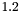
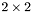
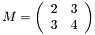
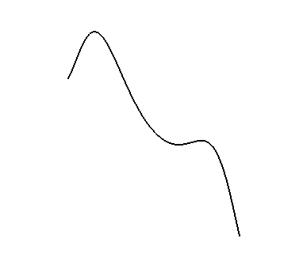

The first thing to be said about CLUScript is that it is somewhat similar to the C-programming language. However, the syntax checking is not very strict, such that meaningless scripts may not produce an error message. Given enough time I will try to improve this.
First of all, every line has to be ended by a semicolon. Comments can be included in the script in the same way as in C and C++. For example,
A = 1 + 2;
This
is a block
comment.
?A = A + 1;
The end of a script does not have to be signalled with a particular keyword. By the way, a question mark at the beginning of a line prints the result after evaluation of the corresponding line in the output window. Placing a colon (:) at the beginning of a line draws the result after evaluation of the line in the visualization window, if the result has a geometric interpretation.
In order to execute a script you have to press ctrl + p in CLUCalc. Note that you can simply copy-paste the example given in these help files into the editor window of CLUCalc and then execute them.
By the way...
Before a script can be executed it has to be parsed. During parsing a code tree is generated. This code tree may then be executed any number of times. For the user, this two step process is usually hidden. The first time a user executes a script it is parsed. Subsequent executions only execute the code tree. This two-step process has the advantage that a lot of processing only has to be done once. This is particularly important in the present case, since a script may have to be executed many times per second in order to achieve an animated presentation. |
A label can be two things: either it represents a variable that stands for some value, or it refers to a function. Anything that starts with any of the following characters is interpreted as a label.
_abcdefghijklmnopqrstuvwxyzäöüß
ABCDEFGHIJKLMNOPQRSTUVWXYZÄÖÜ
A label may also include the characters 1, 2, 3, 4, 5, 6, 7, 8, 9, 0, but these must not be the first character of a label. For example, "A1" is a label but "1A" is interpreted as the number 1 followed by label "A". The parser does not recognize the latter case as an error. The "Umlaute" ä, ö, ü and ß are also valid letters in a label, which allows you to use any German word as a label.
Variables do not have to be declared explicitly. Instead, when the parser encounters an unknown label, it assumes it to be a variable of type "counter", i.e. an integer, and initializes it with zero.
The type of a variable is automatically changed appropriately when it is assigned a particular value. For example,
A = 1.2;
A = VecE3(1, 1, 1);
A = "Hello World";
Variables can be of the following types:
Internally, the variables that are created in a script are saved in a list. This list of variables is only deleted every time the script is parsed. The variable list is not reset before every execution of the code-tree. Therefore, variables that are assigned a value during the first execution of a script, already contain this value at the beginning of the second execution of the script.
For example, you can count the number of times a script was executed by writing
somewhere in the script.
The assignment operator <tt>= copies the value given on its RHS into the variable given on the LHS. As will be seen in later sections, it is not always desirable to copy the content of a variable. Sometimes a reference to a variable saves some writing and is sufficient. References can only be created to variables and not to constant objects. A reference to a variable is creates with the operator <tt>->. For example,
?a = 1;
?b -> a;
b = 2;
?a;
has the output
In this code snippet a variable a is created and assigned the value 1. Then a variable b is assigned a reference to variable a. Now, when b is changed then so is a, as can be seen in the next to code lines. If a reference is made to a constant object, then the reference operator is equivalent to the assignment operator. For example,
results in
Furthermore, when the reference operator is applied to a reference variable, no reference to the reference is created. Instead, the reference on the RHS is simply assigned to the LHS. For example,
?a = 1;
?b -> a;
?c -> b;
?b -> 0;
?a = 2;
?c;
has output
a = 1
b -> 1
c -> 1
b = 0
a = 2
c -> 2
In CLUScript operators can either be right-sided unary or binary. For example, in -1.2 the minus operator is a unary operator acting on the element on its right, whereas in 2 - 1.2 the minus operator is binary. Every operator also has a certain "binding strength". An operator with a higher binding strength is executed before an operator with a lower one. In the following the various operators are described.
- Attention:
- Note that variables of type Multivector which only consist of a scalar part are automatically interpreted as Scalars if necessary.
By the way...
... all operators apart from the assignment operator (=) and the print operator (?) are recursively applied to list. See section Variable Lists for more information on that. |
Point Operators. Many of the operators described in the following also have a 'point' version. For example, there exists the operator <tt>+ but also .+. These 'point' versions of the operators perform the same operation as the operators without the leading point (pointless operators ;-). However, when point operators are applied between two lists (see section Variable Lists) or matrices (see Working with Matrices), then the base operator version is applied between each pair of elements separately. If an operator has a point version, this is noted in the following lists.
The available binary operators are the following:
| Operator | Function | LHS-Type | RHS-Type | L to R |
*, .* | (geometric) product | Multivector | Multivector | yes |
| | Multivector | Scalar | yes |
| | Scalar | Scalar | yes |
| matrix product | Matrix | Matrix | yes |
| | Matrix | Scalar | yes
|
/, ./ | (geometric) division | Multivector | Multivector | yes |
| | Multivector | Scalar | yes |
| | Scalar | Scalar | yes |
| matrix division | Matrix | Matrix | yes |
| | Matrix | Scalar | yes
|
., .. | inner product | Multivector | Multivector | yes
|
^, .^ | outer product | Multivector | Multivector | yes |
| | Multivector | Scalar | yes
|
^^ | power | Scalar | Scalar | yes |
| | Multivector | Counter | yes
|
+, .+ | addition | Multivector | Multivector | yes |
| | Matrix | Matrix | yes |
| | Scalar | Scalar | yes |
| concatenation | String | all types | yes
|
-, .- | subtraction | Multivector | Multivector | yes |
| | Matrix | Matrix | yes |
| | Scalar | Scalar | yes
|
| | join | Multivector | Multivector | yes |
| OR | Counter | Counter | yes
|
& | meet | Multivector | Multivector | yes |
| AND | Counter | Counter | yes
|
% | modulo | Scalar | Scalar | yes
|
° | grade projection | Multivector | Counter | no
|
~ | index list generation | Counter | Counter | yes
|
<< , .<< | list element concatenation | list | any type | no |
| string concatenation | string | any type | no |
- Attention:
- The operator <code># does no longer exist in CLUScript version 2.0.
If there is a "yes" in the column "L to R" then the LHS and RHS variable types can be exchanged. For example, the second row in the table means that you can write VecE3(1,2,3) * 1.2 but also 1.2 * VecE3(1,2,3). Since a variable of type Counter can always be casted to a variable of type Scalar, you can also use a Counter variable wherever you see the type Scalar in the table.
The unary operators available in CLUScript are:
| Operator | Function | Variable Types |
| ? | print element | all types |
| : | draw element | Multivector, Matrix |
| ! | inverse | Multivector, Matrix, Scalar |
| * | dual | Multivector
|
~ | reverse | Multivector |
| transpose | Matrix
|
' | main involution | Multivector
|
- | negate | Counter, Scalar |
| | Multivector, Matrix |
Here is a list of all binary logical operators. The return type is either a scalar set to zero or unity, depending on whether the result of the logical operation if false or true. Operations between matrices and single elements or lists and single elements return a matrix or a list, respectively. These matrices or lists then contain only zero and unity entries, depending on the result of the logical operation. Note that for all logical operations the LHS and RHS may be exchanged.
| Symbol | Meaning | LHS Type | RHS Type | Return Type |
==, .== | equality | scalar | scalar | scalar |
| | matrix | matrix | scalar |
| | matrix | scalar | matrix |
| | multivector | multivector | scalar |
| | string | string | scalar |
| | image | color | image
|
!=, .!= | inequality | scalar | scalar | scalar |
| | matrix | matrix | scalar |
| | matrix | scalar | matrix |
| | multivector | multivector | scalar |
| | string | string | scalar |
| | image | color | image
|
>, .> | greater than | scalar | scalar | scalar |
| | matrix | scalar | matrix
|
< , .< | smaller than | scalar | scalar | scalar |
| | matrix | scalar | matrix
|
>=, .>= | greater or equal than | scalar | scalar | scalar |
| | matrix | scalar | matrix
|
<=, .<= | smaller or equal than | scalar | scalar | scalar |
| | matrix | scalar | matrix
|
&&, .&& | logical AND | scalar | scalar | scalar |
| | matrix | scalar | matrix
|
||, .|| | logical OR | scalar | scalar | scalar |
| | matrix | scalar | matrix
|
There is only one logical unary operator.
| Symbol | Meaning | RHS Type | Return Type |
!! | logical NOT | scalar | scalar |
| | matrix | matrix |
The binding strengths of the various operators are listed in the following table from strongest to weakest binding operator.
| Operator(s) | Direction |
| Functions | RL |
° (grade proj.) | LR |
* (dual), - (negate), !, ~, ' | RL |
% (modulo) | LR |
^ (outer product) | LR |
. (inner product) | LR |
* (geometric product), / | LR |
| (join), & (meet) | LR |
- | LR |
+ | LR
|
~ (index list) | RL
|
== (equal), != (not equal),
< , > ,
<= , >= ,
| LR
|
!! (NOT) | LR
|
&& (AND) | LR
|
|| (OR) | LR
|
<< (list concatenation) | LR
|
= | RL |
: (draw), ? (print) | RL |
If a number of operators appear on the same line, they bind equally strong. In the case that a number of equally strong operators are to be executed sequentially, the second column indicates whether this is done from right to left (RL) or from left to right (LR). For example, the expression A * B * C is equivalent to (A * B) * C. That is, the * operator is executed from left to right. The = operator on the other hand is executed from right to left, i.e. A = B = C is equivalent to A = (B = C).
Most operators return a temporary variable containing the result of the operation. These temporary variables are constants and cannot be assigned any value. That is, A * B = C is not allowed. The assignment operator <tt>= returns the value of the LHS variable. Therefore, it is possible to write A = B = 1, which first assigns 1 to B and then to A.
The print operator <tt>? and the draw operator <tt>: both return no value at all. Therefore, you can write :VecE3(1,1,1):Red in order to first set the drawing color to red and then to draw the vector. Similarly, ?A ?1.2 first prints 1.2 and then the value of A.
By the way...
... if you write ?A = 1.2 the output is A = 1.2, and ?1.2 produces the output Constant = 1.2. In order to obtain an output like The result is 1.2!, you need to write ?"The result is " + 1.2 + "!". |
With CLUScript v1.4 structured programming was introduced. That is, there exist conditional branching and loops.
The syntax of if-clauses is just the same as in C/C++.
if ([condition1])
{
[condition1 true branch]
}
else if ([condition2])
{
[condition2 true branch]
}
else
{
[false branch]
}
You do not need the curly brackets, if you only want to execute a single line. For example,
if (a == 1)
?"'a' is equal to one";
else
?"'a' is not equal to one";
The condition in if ([condition]) must be an expression that results in a scalar. If this scalar is zero, then the condition is considered false, otherwise it is considered true. The logical operators like '==' return either one or zero.
The other important functionality apart from conditional branching, is that of loops, i.e. executing a certain part of code a number of times. In CLUScript the different loops like for-loops, do-while-loops and while-loops are unified in a more simple syntax. The keyword loop asks the parser to continually execute the next line or block of code following the keyword. This is done until the keyword break is encountered. A standard for-loop may then be implemented as follows.
i = 0;
loop
{
if (i >= 5)
break;
i = i + 1;
}
If you forget to add a break command, or never allow your code to reach a break command, the loop would in principle run indefinitely. In order to avoid your programs to hang, CLUCalc has a maximum count of 10000 for loops after which the loops is exited in any case. A better solution to the problem would be to run the parser in an extra thread, but again this is something for a future version of CLUCalc.
- Attention:
- From CLUScript v2.0 onwards lists are defined through square brackets and not with round brackets as before. Lists of a single element are also not interpreted as the element itself, as was the case before.
Variable lists are quite useful tools. A variable list is a comma separated list of elements enclosed in square brackets. For example, [A, 1.2, Red] is a list containing the label A, the Scalar  and the color Red. You can also nest lists to any level, as in [A, [B, C]].
There are a number of different was of generating lists. The most obvious one is to write A = [1,2,3] to assign A the list [1,2,3]. Another method is to use the concatenation operator <tt><< as in the following example.
A = [];
A << 1;
A << 2 << 3;
Now A also contains [1,2,3]. If it is known beforehand how many elements a list will have, but their entries can only be evaluated at a later stage, it is faster to create a list of the appropriate size and then set the components, instead of using the concatenation operator. This can be done with the function List(). For example,
A = List(3);
A(1) = 1;
A(2) = 2;
A(3) = 3;
again generates the same list as before. From CLUScript v2.2 onwards, it is possible to assign to lists of variables. For example, if you want to assign the values 1, 2 and 3 to variables A, B and C, you can write
This is particularly useful when dealing with functions that return a list of values, as for example the function SVD(), which evaluates the singular value decomposition of a matrix. It return a list of three matrices, typically called U, D and V. To have direct access to these matrices you can write
You can assign variable lists to variables, as in A = [1, 2, 3]. This is useful since most operators are applied recursively to variable lists. The only operators that are not are =. For example, [1, 2, 3] + 1 is equivalent to writing [1+1, 2+1, 3+1]. Furthermore, operating with lists on lists applies the corresponding operator for every element of one list to every element of the other list, creating a nested list in the process. For example, [A, B] * [C, D] is equivalent to [ [A*C, B*C], [A*D, B*D] ]. This last expression is basically a  matrix. And yes, you can convert such a nested list into a variable of type 'matrix' using the function Matrix().
After these two lines M contains the matrix

In section Operators point operators were already mentioned. Here we will look at their properties in some more detail. In the previous section it was shown that an operator applied between two lists results in a recursive application of the operator on the elements of the lists. This behaviour is not always desirable. For example, suppose you have two lists L1 = [1,2,3] and L2 = [1,0,-1] and you would like to add these two lists elementwise. That is, add the first element of L1 to the first element of L2, etc. This can be achieved with the operator <tt>.+. Here is an example,
?L1 = [1,2,3];
?L2 = [1,0,-1];
?Sum = L1 + L2;
?PointSum = L1 .+ L2;
has the output
L1 = [1, 2, 3]
L2 = [1, 0, -1]
Sum = [[2, 1, 0], [3, 2, 1], [4, 3, 2]]
PointSum = [2, 2, 2]
That is, the point summation is somewhat like vector addition, if you interpret the lists L1 and L2 as vectors. Note that the standard operator + is applied between the elements of the lists. Therefore, this works for lists containing any elements for which the operator + is defined. An example is,
?["Hello ", 2] + ["World", " times"];
?["Hello ", 2] .+ ["World", " times"];
results in
Constant = [[Hello World, Hello times], [2World, 2 times]]
Constant = [Hello World, 2 times]
This behaviour is the same for all point operators. However, we should probably say something about the list concatenation operator <tt><< and its point version .<< . The operator <tt><< concatenates the element on its left to the list on its right. For example,
?L = [1,2,3];
L << 4;
?L;
gives
L = [1, 2, 3]
L = [1, 2, 3, 4]
This also works for lists on the RHS.
?L = [1,2,3];
L << [4,5];
?L
L << [[6,7], "Hello"];
?L;
which gives
L = [1, 2, 3]
L = [1, 2, 3, 4, 5]
L = [1, 2, 3, 4, 5, [6, 7], Hello]
The point version of this operator concatenates element wise if both lists have the same number of elements and if the elements are lists themselves. For example,
?L1 = [1, 2, 3];
?L2 = [4, 5, 6];
?L12 = L1 .<< L2;
gives
L1 = [1, 2, 3]
L2 = [4, 5, 6]
L12 = [1, 2, 3, 4, 5, 6]
whereas
?L1 = [[1], [2], [3]];
?L2 = [[4], [5], [6]];
?L12 = L1 .<< L2;
gives
L1 = [[1], [2], [3]]
L2 = [[4], [5], [6]]
L12 = [[1, 4], [2, 5], [3, 6]]
Elements of variable lists, vertex lists, matrices and images can be retrieved using the round brackets '()' as in a function call. Applied to a list as in [1,2](2), the operator returns the second element in the list. Applied to a nested list it returns the appropriate sublist: [[1,2], [3,4]](2) returns [3,4]. You can also apply the operator as many times as the list is nested. For example, [[1,2], [3,4]](2)(2) returns 4 and so does [[1,2], [3,4]](2,2).
Elements of a list can be modified as shown in the following example. ?L = [1,2,3,4];
L(2) = 10;
?L;
has output
L = [1, 2, 3, 4]
L = [1, 10, 3, 4]
Note that ?L(2) has as output Constant -> 10 instead of Constant = 10, since the return value of L(2) is the reference to the second element in the list and not just the value. You can also store the reference to an element of a list using the reference operator <tt>->. For example,
?L = [1,2,3,4];
?a -> L(2);
a = "Hello";
?L;
generates the output
L = [1, 2, 3, 4]
a -> 2
L = [1, Hello, 3, 4]
This functionality can be quite useful if you need to access the same element in a list a large number of times, since it is much slower to evaluate the reference to an element of a list (as in L(2)), than to use the reference to an element directly.
If you have created a reference to an element of a list and then destroy the list, for example, by overwriting the respective variable with a different value, the reference variable is set to zero. Here is an example,
?L = [1,2,3,4];
?a -> L(2);
L = 0;
?a;
generates the output
L = [1, 2, 3, 4]
a -> 2
a = 0
By the way...
... a list need not only consists of element of one type. In particular, you can overwrite elements of a list with new elements of a different type. |
Lists of a particular structure can be created by selecting elements of a list by a string. For example,
L = [];
L("Hello") = 1;
?L;
?L("Hello");
has as output
L = [[Hello, 1]]
Constant -> 1
As this short script shows, when you select an element with a name that does not exist in the list, then this element is created. If it does exist, then a reference to its value is returned. The function AnalyzeMV() returns such a type of list, for example.
generates the output
L = [plane, [mag, 1.41421], [pos, [ 1^e1 ]], [dir1, [ 1^e2 ]], [dir2, [ 1^e3 ]]]
Constant -> [ 1^e1 ]
Constant -> [ 1^e2 ]
Constant -> [ 1^e3 ]
This way of creating lists is somewhat similar to structs in C and C++.
You can also extract more than one element of a list at a time by passing an index list through the selection operator. It's easiest to understand this property by showing a couple of examples. The script
?L = [[1,2], [3,4]];
?L(1);
?L([1]);
?L([[2], [1]]);
?L([[1,2], [2,1]]);
generates the following output
L = [[1, 2], [3, 4]]
Constant -> [1, 2]
Constant = [1, 2]
Constant = [[3, 4], [1, 2]]
Constant = [2, 3]
You can also use the operator <tt>~ to generate an index list starting at the value given on the LHS up to the value on its RHS in interger steps of 1. For example,
results in
Constant = [[1], [2], [3], [4], [5]]
This may, for example, be used in the following way.
L = [1,2,4,8,16];
?L(2~4);
generates the output
Although this is jumping ahead a little, using lists you can rotate a list of multivectors as follows.
RBasis contains a list of the rotated basis vectors, and M is the transformation matrix from basis Basis to basis RBasis.
You can do a couple of more things than just display them from CLUScript v2.0 onwards. As you have probably gathered by now, strings can be concatenated using the operator +. Given a variable containing a string, you can also concatenate elements to this string using the operator <tt><<. For example,
?s = "Hello ";
s << "World" << 2 << 3;
?s;
which outputs
A character in a string can be selected using the selection operator <tt>(). For example,
?s = "Hello";
?s(3);
?s([[2], [4], [1]]);
gives
Hello
l
Constant = [e, l, H]
You can also search for all positions of a substring in a string as follows.
?s = "Hello World";
?s("l");
?s("Wo");
This script returns
Hello World
Constant = [3, 4, 10]
Constant = [7]
This feature can be quite useful when you want to strip, for example, a filename returned from FileChooser() from its path and extension.
- Attention:
- From version 2.3 onwards, strings may also contain control symbols for new line ('\n'), tabulator ('\t') and the backslash itself ('\\'). This is in line with the syntax of generating a quotation mark in a string via '\"'. Make sure to check your old CLUScripts, where you wrote latex code. The backslash symbols need to be doubled now!
This feature was introduced in CLUScript version 1.2. A CLUScript macro is the closest you can get so far to a function. There is no strict type checking when you pass parameters to macros, which can be a source of error. Nevertheless, macros facilitate many more complex operations. A macro is defined using curly brackets ({ }) as follows.
Hello = { ?"Hello"; }
Hello();
This script produces the following output.
The variable Hello does in fact contain a reference to the actual function. This means that you can also store the reference to the function in a list. For example,
L = [1,2,3];
L(2) = { ?"Hello"; }
?L;
L(2)();
/endcode
which produces the outpu
\code
L = [1, 030850C8, 3]
Hello
Note that a macro is not executed at the point of its definition. It is also only translated once in the parsing process, such that a repeated execution of a script will not redefine a macro continuously.
You can also pass any number of parameters to a macro. There is no internal process that checks whether the number and type of parameters is correct, which means that you also do not have to declare the number and type of parameters expected when you define a macro. Parameters are passed to a macro in the same way as to any other function: a comma separated list within the round brackets. That is, Hello(1,b) passes the parameters 1 and b to the macro. Whether the macro uses these parameters or not, does not matter. Within the macro a variable list called _P is always available, which contains the parameters passed to the macro. You can access the different parameters with the selection operator <tt>(), just as for any other variable list. Another code example should clarify this.
Hello = { ?"Hello " + _P(1); }
Hello("World");
generates the output
If you define variables in a script, then they are strictly local. That is, in CLUScript v2.0 you can no longer access global variables by simply using their variable name in a function. For example,
a = 1;
func =
{
?a;
?a = 2;
?b = 1;
}
func();
?a;
?b;
The output of this script is
a = 0
a = 2
b = 1
a = 1
b = 0
The variables defined inside the macro only exist within the macro and also do not relate to global variables of the same name. You can, however, refer to global variables from within a macro by writing :: in front of the respective variable name. For example, here is a modified version of the previous script.
a = 1;
func =
{
?a = 1;
?::a = 2;
?a;
?::b = 1;
}
func();
?a;
?b;
This time the output of the script is
a = 1
a = 2
a = 1
b = 1
a = 2
b = 1
- Attention:
- The variables defined through calls of DefVarsE3(), DefVarsP3(), DefVarsN3() and DefVarsC2(), as well as all predefined variables are accesible without leading
:: from within macros.
Note that references to macros are usually also stored in global variable. Hence, if you want to call a macro from within another macro you often also have to use :: in front of the macro name. Here is an example,
func1 = { ?"Hello"; }
func2 =
{
func1 = { ?"Hola"; }
func1();
::func1();
?"World";
}
func2();
which produces the output
Of course, a macro can contain more than a single line. As shown above, you can write a whole block of code, with lines separated by semicolons, within the curly brackets. The return value of a macro is the result of the last command line, if this line does not end with a semicolon. For example,
Rot2D =
{
x = _P(1); y = _P(2); angle = _P(3);
a = x*cos(angle) - y*sin(angle);
b = x*sin(angle) + y*cos(angle);
(a, b)
}
?Rot2D(1, 0, 45*RadPerDeg);
The output of this script is
Constant = (0.707107, 0.707107)
You can also return different values at different places of a script using the break keyword. Here is an example,
func =
{
if (_P(1) < 0)
(-1) break;
sqrt(_P(1))
}
?func(-4);
?func(4);
which returns
Constant = -1
Constant = 2
Another new feature of CLUScript v2.0 is that variables are passed to macros by reference. This means that you can change parameters that are passed to a function. Here is an example,
Incr =
{
a -> _P(1);
a = a + 1;
}
?x = 1;
Incr(x);
?x;
which returns
References to parameters are also useful if you need to access the parameters at many places in a macro.
Macros are particularly useful if you want to execute the same complex calculation at different places in the script. They can also make the Plot command better readable.
Another nice features of macros is that you can also pass them as parameters to other macros. This works because if you define func = { //... }, then func is simply a variable that contains a referecnce to the code enclosed in the curly brackets. The reference itself is of no interest, but it can be treated like a standard variable. In the next example we pass one function to another one.
_2dView = 1;
_BGColor = White;
DefVarsE3();
MyPlot =
{
f = _P(1);
if (Type(f) != "code")
{
?"Expect function as first parameter.";
break;
}
minval = _P(2);
maxval = _P(3);
step = _P(4);
pos = minval;
Data = f(pos);
loop
{
pos = pos + step;
if (pos > maxval)
break;
Data << f(pos);
}
DrawPointList(Data);
}
func =
{
x -> _P(1);
x*e1 + (1 - x + sin(x*x))*e2
}
:Black;
MyPlot(func, -2, 2, 0.1);
which produces the visualization

A macro like MyPlot may be stored in a separate file and included in a script via the include preprocessor directive (see Preprocessor Directives), whenever it is needed.
It is also possible to do a kind of object oriented programming using structured lists. Have a look at the following script.
func =
{
this -> _P(1);
?"The name is '" + this("name") + "'";
}
C = [];
C("name") = "My first list";
C("print") = func;
C("print")(C);
This produces the output
The name is 'My first list'
 in projective space.
in projective space.